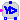
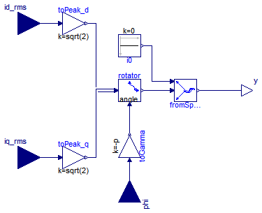
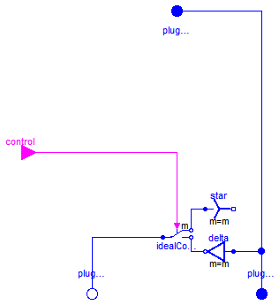
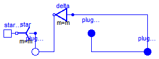
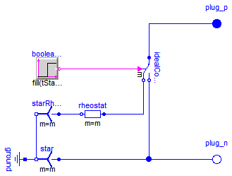
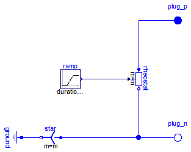

Extends from Modelica.Icons.Package (Icon for standard packages).
| Name | Description |
|---|---|
| VfController | Voltage-Frequency-Controller |
| CurrentController | Current controller |
|  SwitchYD | Y-D-switch |
| Terminal box Y/D-connection | |
| Rheostat which is shortened after a given time | |
| Rheostat with linearly decreasing resistance | |
| Calculates Impedances from nominal values | |
| Computes machine parameter from usual datasheet |

Extends from Modelica.Blocks.Interfaces.SIMO (Single Input Multiple Output continuous control block).
| Type | Name | Default | Description |
|---|---|---|---|
| Integer | nout | m | Number of outputs |
| Integer | m | 3 | Number of phases |
| Voltage | VNominal | Nominal RMS voltage per phase [V] | |
| Frequency | fNominal | Nominal frequency [Hz] | |
| Angle | BasePhase | 0 | Common phase shift [rad] |
| Type | Name | Description |
|---|---|---|
| input RealInput | u | Connector of Real input signal |
| output RealOutput | y[nout] | Connector of Real output signals |
block VfController "Voltage-Frequency-Controller"
extends Modelica.Blocks.Interfaces.SIMO(final nout=m);
constant Modelica.SIunits.Angle pi=Modelica.Constants.pi;
parameter Integer m=3 "Number of phases";
parameter Modelica.SIunits.Voltage VNominal "Nominal RMS voltage per phase";
parameter Modelica.SIunits.Frequency fNominal "Nominal frequency";
parameter Modelica.SIunits.Angle BasePhase=0 "Common phase shift";
output Modelica.SIunits.Angle x(start=0, fixed=true) "Integrator state";
output Modelica.SIunits.Voltage amplitude;
equation
//amplitude = sqrt(2)*VNominal*min(abs(u)/fNominal, 1);
amplitude = sqrt(2)*VNominal*(if abs(u)<fNominal then abs(u)/fNominal else 1);
der(x) = 2*pi*u;
y = {amplitude*sin(x + BasePhase - (k - 1)*2/m*pi) for k in 1:m};
end VfController;

Extends from Modelica.Blocks.Interfaces.MO (Multiple Output continuous control block).
| Type | Name | Default | Description |
|---|---|---|---|
| Integer | p | Number of poles pairs | |
| Integer | nout | m | Number of outputs |
| Type | Name | Description |
|---|---|---|
| output RealOutput | y[nout] | Connector of Real output signals |
| input RealInput | id_rms | |
| input RealInput | iq_rms | |
| input RealInput | phi |
model CurrentController "Current controller" constant Integer m=3 "Number of phases"; parameter Integer p "Number of poles pairs"; extends Modelica.Blocks.Interfaces.MO(final nout=m);Modelica.Blocks.Interfaces.RealInput id_rms; Modelica.Blocks.Interfaces.RealInput iq_rms; Modelica.Blocks.Interfaces.RealInput phi; Modelica.Blocks.Math.Gain toPeak_d(k=sqrt(2)); Modelica.Blocks.Math.Gain toPeak_q(k=sqrt(2)); Modelica.Blocks.Math.Gain toGamma(k=-p); Modelica.Electrical.Machines.SpacePhasors.Blocks.Rotator rotator; Modelica.Blocks.Sources.Constant i0(k=0); Modelica.Electrical.Machines.SpacePhasors.Blocks.FromSpacePhasor fromSpacePhasor; equationconnect(iq_rms, toPeak_q.u); connect(phi, toGamma.u); connect(rotator.angle, toGamma.y); connect(rotator.y, fromSpacePhasor.u); connect(toPeak_d.u, id_rms); connect(toPeak_d.y, rotator.u[1]); connect(toPeak_q.y, rotator.u[2]); connect(i0.y, fromSpacePhasor.zero); connect(fromSpacePhasor.y, y); end CurrentController;

| Type | Name | Default | Description |
|---|---|---|---|
| Integer | m | 3 | Number of phases |
| Type | Name | Description |
|---|---|---|
| PositivePlug | plugSupply | To grid |
| PositivePlug | plug_sp | To positive stator plug |
| NegativePlug | plug_sn | To negative stator plug |
| input BooleanInput | control[m] |
model SwitchYD "Y-D-switch" parameter Integer m=3 "Number of phases";Modelica.Electrical.MultiPhase.Interfaces.PositivePlug plugSupply(final m=m) "To grid"; Modelica.Electrical.MultiPhase.Interfaces.PositivePlug plug_sp(final m=m) "To positive stator plug"; Modelica.Electrical.MultiPhase.Interfaces.NegativePlug plug_sn(final m=m) "To negative stator plug"; Modelica.Electrical.MultiPhase.Basic.Star star(final m=m); Modelica.Electrical.MultiPhase.Basic.Delta delta(final m=m); Modelica.Electrical.MultiPhase.Ideal.IdealCommutingSwitch idealCommutingSwitch( final m=m); Modelica.Blocks.Interfaces.BooleanInput control[m]; equationconnect(delta.plug_p, plugSupply); connect(delta.plug_p, plug_sp); connect(idealCommutingSwitch.plug_n2, delta.plug_n); connect(idealCommutingSwitch.plug_n1, star.plug_p); connect(idealCommutingSwitch.plug_p,plug_sn); connect(control, idealCommutingSwitch.control); end SwitchYD;

| Type | Name | Default | Description |
|---|---|---|---|
| Integer | m | 3 | Number of phases |
| String | terminalConnection | Choose Y=star/D=delta |
| Type | Name | Description |
|---|---|---|
| PositivePlug | plug_sp | To positive stator plug |
| NegativePlug | plug_sn | To negative stator plug |
| PositivePlug | plugSupply | To grid |
| NegativePin | starpoint |
model TerminalBox "Terminal box Y/D-connection" parameter Integer m=3 "Number of phases"; parameter String terminalConnection(start="Y") "Choose Y=star/D=delta";Modelica.Electrical.MultiPhase.Interfaces.PositivePlug plug_sp(final m=m) "To positive stator plug"; Modelica.Electrical.MultiPhase.Interfaces.NegativePlug plug_sn(final m=m) "To negative stator plug"; Modelica.Electrical.MultiPhase.Basic.Star star(final m=m) if (terminalConnection<>"D"); Modelica.Electrical.MultiPhase.Basic.Delta delta(final m=m) if (terminalConnection=="D"); Modelica.Electrical.MultiPhase.Interfaces.PositivePlug plugSupply(final m=m) "To grid"; Modelica.Electrical.Analog.Interfaces.NegativePin starpoint if (terminalConnection<>"D"); equationconnect(plug_sn, star.plug_p); connect(plug_sn, delta.plug_n); connect(delta.plug_p,plug_sp); connect(plug_sp, plugSupply); connect(star.pin_n, starpoint); end TerminalBox;
 Modelica.Electrical.Machines.Utilities.SwitchedRheostat
Modelica.Electrical.Machines.Utilities.SwitchedRheostat
Switched rheostat, used for starting asynchronous induction motors with slipring rotor:
The external rotor resistance RStart is shortened at time tStart.
| Type | Name | Default | Description |
|---|---|---|---|
| Integer | m | 3 | Number of phases |
| Resistance | RStart | Starting resistance [Ohm] | |
| Time | tStart | Duration of switching on the starting resistor [s] |
| Type | Name | Description |
|---|---|---|
| PositivePlug | plug_p | To positive rotor plug |
| NegativePlug | plug_n | To negative rotor plug |
model SwitchedRheostat "Rheostat which is shortened after a given time" parameter Integer m= 3 "Number of phases";Modelica.Electrical.MultiPhase.Interfaces.PositivePlug plug_p(final m=m) "To positive rotor plug"; Modelica.Electrical.MultiPhase.Interfaces.NegativePlug plug_n(final m=m) "To negative rotor plug"; parameter Modelica.SIunits.Resistance RStart "Starting resistance"; parameter Modelica.SIunits.Time tStart "Duration of switching on the starting resistor";Modelica.Electrical.MultiPhase.Basic.Star star(final m=m); Modelica.Electrical.Analog.Basic.Ground ground; Modelica.Electrical.MultiPhase.Ideal.IdealCommutingSwitch idealCommutingSwitch(final m=m); Modelica.Electrical.MultiPhase.Basic.Resistor rheostat( final m=m, final R=fill(RStart, m)); Modelica.Electrical.MultiPhase.Basic.Star starRheostat(final m=m); Modelica.Blocks.Sources.BooleanStep booleanStep[m]( final startTime=fill(tStart, m), final startValue=fill(false, m)); equationconnect(plug_p, idealCommutingSwitch.plug_p); connect(idealCommutingSwitch.plug_n2, plug_n); connect(rheostat.plug_p, idealCommutingSwitch.plug_n1); connect(idealCommutingSwitch.plug_n2, star.plug_p); connect(rheostat.plug_n, starRheostat.plug_p); connect(starRheostat.pin_n, star.pin_n); connect(star.pin_n, ground.p); connect(booleanStep.y, idealCommutingSwitch.control); end SwitchedRheostat;

Ramped rheostat, used for starting asynchronous induction motors with slipring rotor:
The external rotor resistance RStart is reduced to zero,
starting at time tStart with a linear ramp tRamp.
| Type | Name | Default | Description |
|---|---|---|---|
| Integer | m | 3 | Number of phases |
| Resistance | RStart | Starting resistance [Ohm] | |
| Time | tStart | Time instance of reducing the rheostat [s] | |
| Time | tRamp | Duration of ramp [s] |
| Type | Name | Description |
|---|---|---|
| PositivePlug | plug_p | To positive rotor plug |
| NegativePlug | plug_n | To negative rotor plug |
model RampedRheostat "Rheostat with linearly decreasing resistance" parameter Integer m= 3 "Number of phases";Modelica.Electrical.MultiPhase.Interfaces.PositivePlug plug_p(final m=m) "To positive rotor plug"; Modelica.Electrical.MultiPhase.Interfaces.NegativePlug plug_n(final m=m) "To negative rotor plug"; parameter Modelica.SIunits.Resistance RStart "Starting resistance"; parameter Modelica.SIunits.Time tStart "Time instance of reducing the rheostat"; parameter Modelica.SIunits.Time tRamp "Duration of ramp";Modelica.Electrical.MultiPhase.Basic.Star star(final m=m); Modelica.Electrical.Analog.Basic.Ground ground; Modelica.Electrical.MultiPhase.Basic.VariableResistor rheostat(final m=m); Modelica.Blocks.Sources.Ramp ramp[m]( final height=fill(-RStart, m), final duration=fill(tRamp, m), final offset=fill(RStart, m), final startTime=fill(tStart, m)); equationconnect(plug_p, rheostat.plug_p); connect(rheostat.plug_n, plug_n); connect(rheostat.R, ramp.y); connect(rheostat.plug_n, star.plug_p); connect(star.pin_n, ground.p); end RampedRheostat;
 Modelica.Electrical.Machines.Utilities.TransformerData
Modelica.Electrical.Machines.Utilities.TransformerData
The parameters of the transformer models are calculated from parameters normally given in a technical description.
Extends from Modelica.Icons.Record (Icon for records).
| Type | Name | Default | Description |
|---|---|---|---|
| Frequency | f | Nominal frequency [Hz] | |
| Voltage | V1 | Primary nominal line-to-line voltage (RMS) [V] | |
| String | C1 | Choose primary connection | |
| Voltage | V2 | Secondary open circuit line-to-line voltage (RMS) @ primary nominal voltage [V] | |
| String | C2 | Choose secondary connection | |
| ApparentPower | SNominal | Nominal apparent power [VA] | |
| Real | v_sc | Impedance voltage drop pu | |
| Power | P_sc | Short-circuit (copper) losses [W] | |
| Result | |||
| Real | n | V1/V2 | Ratio primary voltage (line-to-line) / secondary voltage (line-to-line) |
| Resistance | R1 | 0.5*P_sc/(3*I1ph^2) | Warm primary resistance per phase [Ohm] |
| Inductance | L1sigma | sqrt(Z1ph^2 - R1^2)/(2*Model... | Primary stray inductance per phase [H] |
| Resistance | R2 | 0.5*P_sc/(3*I2ph^2) | Warm secondary resistance per phase [Ohm] |
| Inductance | L2sigma | sqrt(Z2ph^2 - R2^2)/(2*Model... | Secondary stray inductance per phase [H] |
record TransformerData "Calculates Impedances from nominal values"
extends Modelica.Icons.Record;
parameter Modelica.SIunits.Frequency f(start=50) "Nominal frequency";
parameter Modelica.SIunits.Voltage V1(start=100)
"Primary nominal line-to-line voltage (RMS)";
parameter String C1(start="Y") "Choose primary connection";
parameter Modelica.SIunits.Voltage V2(start=100)
"Secondary open circuit line-to-line voltage (RMS) @ primary nominal voltage";
parameter String C2(start="y") "Choose secondary connection";
parameter Modelica.SIunits.ApparentPower SNominal(start=30E3)
"Nominal apparent power";
parameter Real v_sc(final min=0, final max=1, start=0.05)
"Impedance voltage drop pu";
parameter Modelica.SIunits.Power P_sc(start=300)
"Short-circuit (copper) losses";
parameter Real n = V1/V2
"Ratio primary voltage (line-to-line) / secondary voltage (line-to-line)";
final parameter Modelica.SIunits.Voltage V1ph = V1/(if C1=="D" then 1 else sqrt(3))
"Primary phase voltage (RMS)";
final parameter Modelica.SIunits.Current I1ph = SNominal/(3*V1ph)
"Primary phase current (RMS)";
final parameter Modelica.SIunits.Voltage V2ph = V2/(if C2=="d" then 1 else sqrt(3))
"Secondary phase voltage (RMS)";
final parameter Modelica.SIunits.Current I2ph = SNominal/(3*V2ph)
"Secondary phase current (RMS)";
final parameter Modelica.SIunits.Impedance Z1ph = 0.5*v_sc*V1ph/I1ph
"Primary impedance per phase";
parameter Modelica.SIunits.Resistance R1= 0.5*P_sc/(3*I1ph^2)
"Warm primary resistance per phase";
parameter Modelica.SIunits.Inductance L1sigma= sqrt(Z1ph^2-R1^2)/(2*Modelica.Constants.pi*f)
"Primary stray inductance per phase";
final parameter Modelica.SIunits.Impedance Z2ph = 0.5*v_sc*V2ph/I2ph
"Secondary impedance per phase";
parameter Modelica.SIunits.Resistance R2= 0.5*P_sc/(3*I2ph^2)
"Warm secondary resistance per phase";
parameter Modelica.SIunits.Inductance L2sigma= sqrt(Z2ph^2-R2^2)/(2*Modelica.Constants.pi*f)
"Secondary stray inductance per phase";
end TransformerData;
Modelica.Electrical.Machines.Utilities.SynchronousMachineData
The parameters of the synchronous machine model with electrical excitation (and damper) are calculated from parameters normally given in a technical description, according to the standard EN 60034-4:2008 Appendix C.
Extends from Modelica.Icons.Record (Icon for records).
| Type | Name | Default | Description |
|---|---|---|---|
| ApparentPower | SNominal | Nominal apparent power [VA] | |
| Voltage | VsNominal | Nominal stator voltage per phase [V] | |
| Frequency | fsNominal | Nominal stator frequency [Hz] | |
| Current | IeOpenCircuit | Open circuit excitation current @ nominal voltage and frequency [A] | |
| Real | x0 | Stator stray inductance per phase (approximately zero impedance) [pu] | |
| Real | xd | Synchronous reactance per phase, d-axis [pu] | |
| Real | xq | Synchronous reactance per phase, q-axis [pu] | |
| Real | xdTransient | Transient reactance per phase, d-axis [pu] | |
| Real | xdSubtransient | Subtransient reactance per phase, d-axis [pu] | |
| Real | xqSubtransient | Subtransient reactance per phase, q-axis [pu] | |
| Time | Ta | Armature time constant [s] | |
| Time | Td0Transient | Open circuit field time constant Td0' [s] | |
| Time | Td0Subtransient | Open circuit subtransient time constant Td0'', d-axis [s] | |
| Time | Tq0Subtransient | Open circuit subtransient time constant Tq0'', q-axis [s] | |
| Material | |||
| Temperature | TsSpecification | Specification temperature of stator resistance [K] | |
| Temperature | TsRef | Reference temperature of stator resistance [K] | |
| LinearTemperatureCoefficient20 | alpha20s | Temperature coefficient of stator resistance at 20 degC [1/K] | |
| Temperature | TrSpecification | Specification temperature of (optional) damper cage [K] | |
| Temperature | TrRef | Reference temperature of damper resistances in d- and q-axis [K] | |
| LinearTemperatureCoefficient20 | alpha20r | Temperature coefficient of damper resistances in d- and q-axis [1/K] | |
| Temperature | TeSpecification | Specification excitation temperature [K] | |
| Temperature | TeRef | Reference temperture of excitation resistance [K] | |
| LinearTemperatureCoefficient20 | alpha20e | Temperature coefficient of excitation resistance [1/K] | |
| Result | |||
| Resistance | Rs | Machines.Thermal.convertResi... | Stator resistance per phase at TRef [Ohm] |
| Inductance | Lssigma | x0*ZReference/omega | Stator stray inductance per phase [H] |
| Inductance | Lmd | xmd*ZReference/omega | Main field inductance in d-axis [H] |
| Inductance | Lmq | xmq*ZReference/omega | Main field inductance in q-axis [H] |
| Inductance | Lrsigmad | (xrd - xmd)*ZReference/omega | Damper stray inductance in d-axis [H] |
| Inductance | Lrsigmaq | (xrq - xmq)*ZReference/omega | Damper stray inductance in q-axis [H] |
| Resistance | Rrd | Machines.Thermal.convertResi... | Damper resistance in d-axis at TRef [Ohm] |
| Resistance | Rrq | Machines.Thermal.convertResi... | Damper resistance in q-axis at TRef [Ohm] |
| Resistance | Re | 3/2*turnsRatio^2*Machines.Th... | Excitation resistance at TRef [Ohm] |
| Real | sigmae | 1 - xmd/xe | Stray fraction of total excitation inductance |
record SynchronousMachineData
"Computes machine parameter from usual datasheet"
extends Modelica.Icons.Record;
import Modelica.Constants.pi;
parameter Modelica.SIunits.ApparentPower SNominal(start=30E3)
"Nominal apparent power";
parameter Modelica.SIunits.Voltage VsNominal(start=100)
"Nominal stator voltage per phase";
final parameter Modelica.SIunits.Current IsNominal=SNominal/(3*VsNominal)
"Nominal stator current per phase";
final parameter Modelica.SIunits.Impedance ZReference=VsNominal/IsNominal
"Reference impedance";
parameter Modelica.SIunits.Frequency fsNominal(start=50)
"Nominal stator frequency";
final parameter Modelica.SIunits.AngularVelocity omega=2*pi*fsNominal
"Nominal angular frequency";
parameter Modelica.SIunits.Current IeOpenCircuit(start=10)
"Open circuit excitation current @ nominal voltage and frequency";
final parameter Real turnsRatio = sqrt(2)*VsNominal/(omega*Lmd*IeOpenCircuit)
"Stator current / excitation current";
parameter Real x0(start=0.1)
"Stator stray inductance per phase (approximately zero impedance) [pu]";
parameter Real xd(start=1.6) "Synchronous reactance per phase, d-axis [pu]";
parameter Real xq(start=1.6) "Synchronous reactance per phase, q-axis [pu]";
parameter Real xdTransient(start=0.1375)
"Transient reactance per phase, d-axis [pu]";
parameter Real xdSubtransient(start=0.121428571)
"Subtransient reactance per phase, d-axis [pu]";
parameter Real xqSubtransient(start=0.148387097)
"Subtransient reactance per phase, q-axis [pu]";
parameter Modelica.SIunits.Time Ta(start=0.014171268)
"Armature time constant";
parameter Modelica.SIunits.Time Td0Transient(start=0.261177343)
"Open circuit field time constant Td0'";
parameter Modelica.SIunits.Time Td0Subtransient(start=0.006963029)
"Open circuit subtransient time constant Td0'', d-axis";
parameter Modelica.SIunits.Time Tq0Subtransient(start=0.123345081)
"Open circuit subtransient time constant Tq0'', q-axis";
parameter Modelica.SIunits.Temperature TsSpecification(start=293.15)
"Specification temperature of stator resistance";
parameter Modelica.SIunits.Temperature TsRef(start=293.15)
"Reference temperature of stator resistance";
parameter Machines.Thermal.LinearTemperatureCoefficient20 alpha20s(start=0)
"Temperature coefficient of stator resistance at 20 degC";
parameter Modelica.SIunits.Temperature TrSpecification(start=293.15)
"Specification temperature of (optional) damper cage";
parameter Modelica.SIunits.Temperature TrRef(start=293.15)
"Reference temperature of damper resistances in d- and q-axis";
parameter Machines.Thermal.LinearTemperatureCoefficient20 alpha20r(start=0)
"Temperature coefficient of damper resistances in d- and q-axis";
parameter Modelica.SIunits.Temperature TeSpecification(start=293.15)
"Specification excitation temperature";
parameter Modelica.SIunits.Temperature TeRef(start=293.15)
"Reference temperture of excitation resistance";
parameter Machines.Thermal.LinearTemperatureCoefficient20 alpha20e(start=0)
"Temperature coefficient of excitation resistance";
final parameter Real xmd = xd - x0
"Main field reactance per phase, d-axis [pu]";
final parameter Real xmq = xq - x0
"Main field reactance per phase, q-axis [pu]";
final parameter Real xe = xmd^2/(xd - xdTransient)
"Excitation reactance [pu]";
final parameter Real xrd = xmd^2/(xdTransient - xdSubtransient)*(1 - (xmd/xe))^2 + xmd^2/xe
"Damper reactance per phase, d-axis [pu]";
final parameter Real xrq = xmq^2/(xq - xqSubtransient)
"Damper reactance per phase, d-axis [pu]";
final parameter Real rs = 2/(1/xdSubtransient + 1/xqSubtransient)/(omega*Ta)
"Stator resistance per phase at specifaction temperature [pu]";
final parameter Real rrd = (xrd - xmd^2/xe)/(omega*Td0Subtransient)
"Damper resistance per phase at specification temperature, d-axis [pu]";
final parameter Real rrq = xrq/(omega*Tq0Subtransient)
"Damper resistance per phase at specification temperature, q-axis [pu]";
final parameter Real re = xe/(omega*Td0Transient)
"Excitation resistance per phase at specification temperature [pu]";
parameter Modelica.SIunits.Resistance Rs=
Machines.Thermal.convertResistance(rs*ZReference,TsSpecification,alpha20s,TsRef)
"Stator resistance per phase at TRef";
parameter Modelica.SIunits.Inductance Lssigma=x0*ZReference/omega
"Stator stray inductance per phase";
parameter Modelica.SIunits.Inductance Lmd=xmd*ZReference/omega
"Main field inductance in d-axis";
parameter Modelica.SIunits.Inductance Lmq=xmq*ZReference/omega
"Main field inductance in q-axis";
parameter Modelica.SIunits.Inductance Lrsigmad=(xrd - xmd)*ZReference/omega
"Damper stray inductance in d-axis";
parameter Modelica.SIunits.Inductance Lrsigmaq=(xrq - xmq)*ZReference/omega
"Damper stray inductance in q-axis";
parameter Modelica.SIunits.Resistance Rrd=
Machines.Thermal.convertResistance(rrd*ZReference,TrSpecification,alpha20r,TrRef)
"Damper resistance in d-axis at TRef";
parameter Modelica.SIunits.Resistance Rrq=
Machines.Thermal.convertResistance(rrq*ZReference,TrSpecification,alpha20r,TrRef)
"Damper resistance in q-axis at TRef";
parameter Modelica.SIunits.Resistance Re=3/2*turnsRatio^2*
Machines.Thermal.convertResistance(re*ZReference,TeSpecification,alpha20e,TeRef)
"Excitation resistance at TRef";
parameter Real sigmae=1 - xmd/xe
"Stray fraction of total excitation inductance";
end SynchronousMachineData;